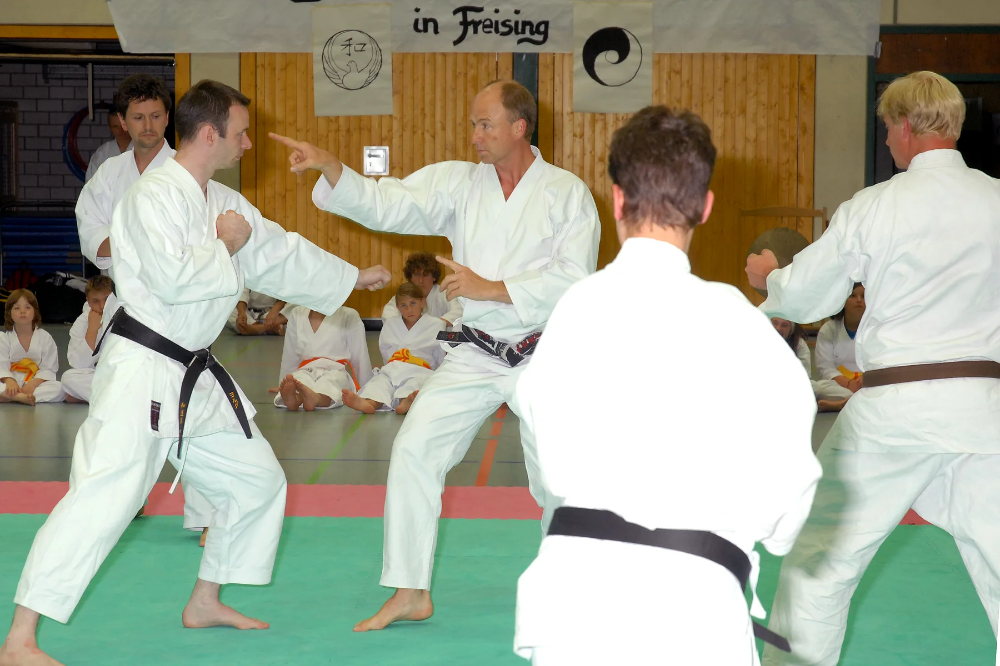
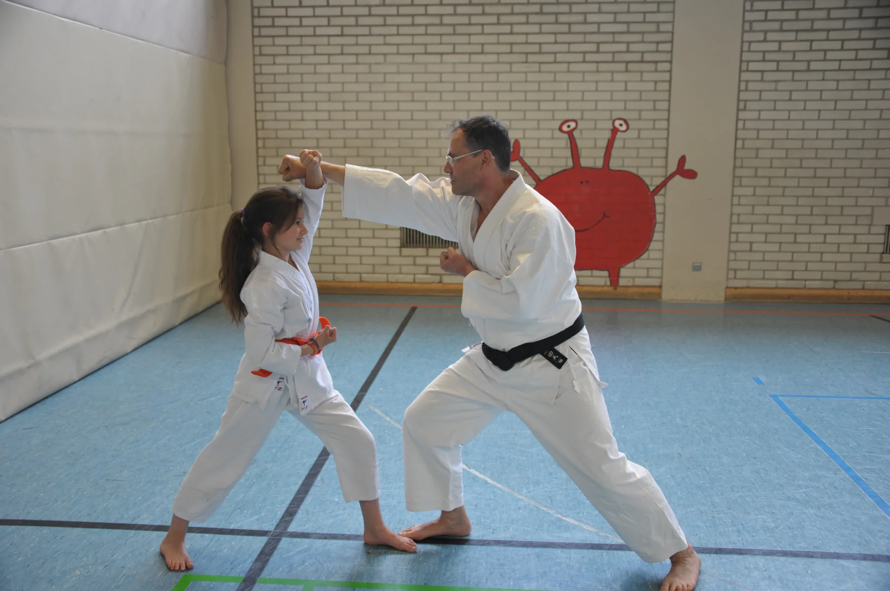
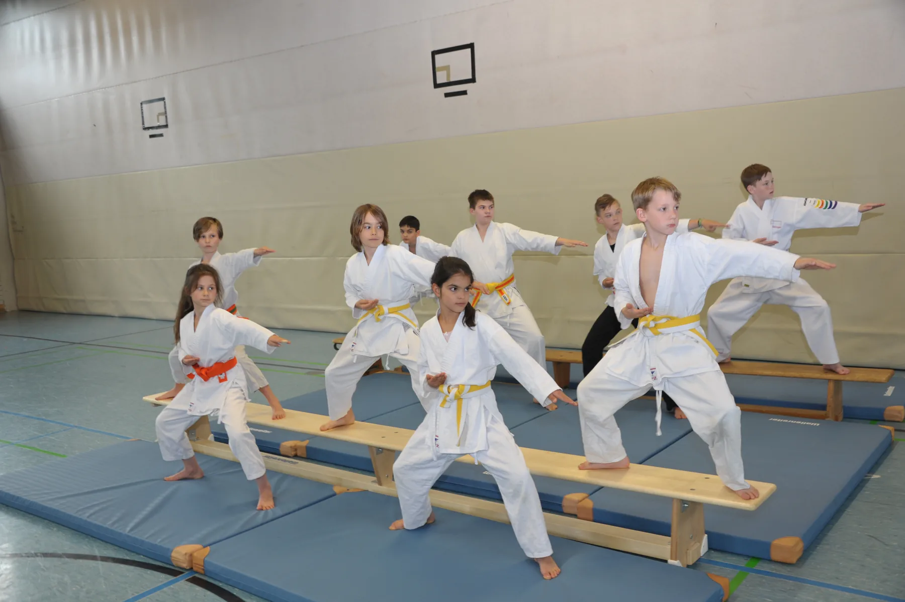
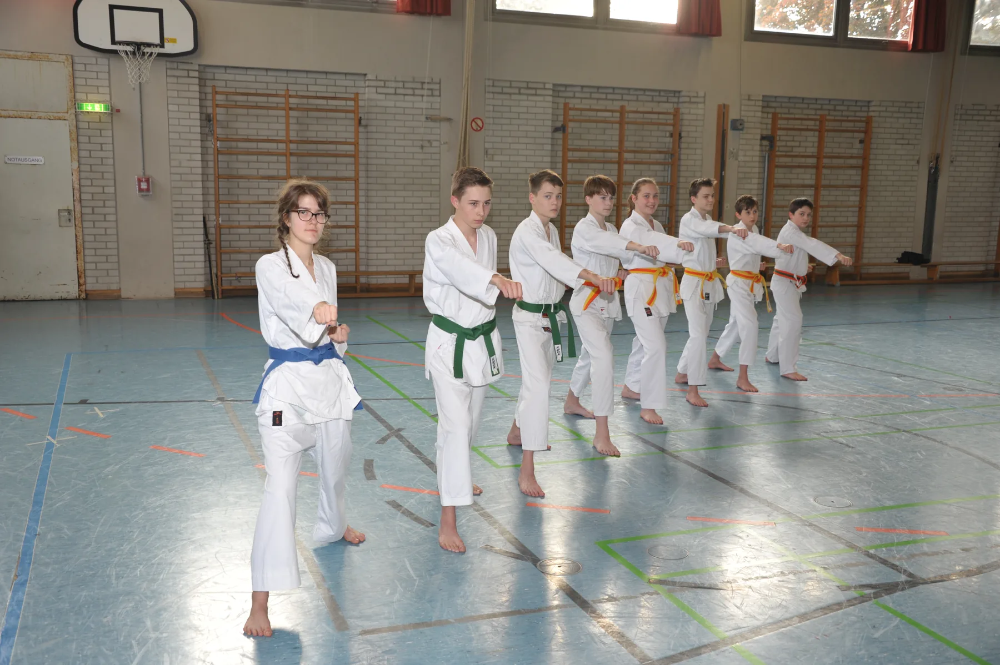
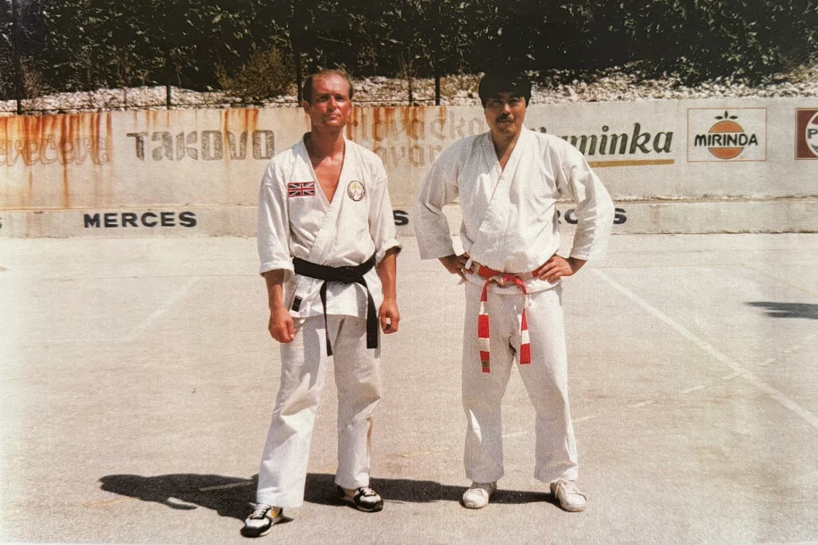

Im Oktober 1967 trafen sich im Tanzsaal beim Wirt von Sünzhausen zehn Interessenten, die die gemeinsame Leidenschaft für den Kampfsport verband. Aus diesem ersten Kreis entstand kurze Zeit später das Karate-Dōjō Freising.
Gründung
Ein Dōjō wird Verein

Am 2. Januar 1968 gründeten diese Pioniere das Karate-Dōjō Freising in der Form eines eingetragenen Vereins. Treibende Kräfte waren über die Grenzen von Freising hinaus bekannte Namen wie Karl Sirch, Josef Rattenhuber und Franz Kiening.
Sportliche Erfolge
Bayerischer Mannschaftsmeistertitel

Die ersten sportlichen Erfolge bei Landes- und Bundesmeisterschaften ließen nicht lange auf sich warten. Neben vielen Platzierungen auf bayerischer Ebene war der Bayerische Mannschaftsmeistertitel 1973 ein frühes Ausrufezeichen.
Nachwuchs
Deutscher Jugendmeistertitel

1974 wurde Edgar Heinrich Deutscher Jugendmeister. Weitere erfolgreiche Kämpfer waren unter anderem die Brüder Helmut und Franz Brunngartner sowie Josef Marzahn.
Bundesweite Sichtbarkeit
Internationaler Deutscher Meistertitel

1976 folgte der internationale Deutsche Meistertitel von Helmut Stoppe. Zu verdanken waren die frühen Erfolge vor allem dem sehr engagierten Trainer und damaligen 1. Vorstand Josef Rattenhuber.
Josef Rattenhuber verstarb 1975. Sein Engagement prägte die sportliche Entwicklung des jungen Vereins.
Entwicklung
Impulse über Freising hinaus

Aus dem Verein in Freising entstanden die Karateabteilung von Erding durch Gerd Rombowski, die von Neufahrn durch Franz Kiening und die von Moosburg durch Franz Ippisch. Aus diesen Wurzeln gingen auch Dōjōs in Gaden, Dorfen und Eching hervor.
Gegenwart
Vier Sparten, ein Dōjō
Über die Jahrzehnte entwickelte sich das Karate-Dōjō Freising mit Wadō Ryū Karate, Takamura ha Shindō Yōshin Ryū, Taiji und Kickboxen zu einem besonderen Ort für Kampfkunst und Breitensport in Freising.
Meisterschaften, Auszeichnungen und Wettkämpfe
Zu unserer Vereinsgeschichte gehören auch sportliche Erfolge. Diese Auswahl verbindet Meilensteine des Vereins mit Wettkampfergebnissen aus den Lebensläufen unserer Trainer.
1973
Bayerischer Mannschaftsmeistertitel
Das Karate-Dōjō Freising gewinnt den bayerischen Mannschaftsmeistertitel.
1974
Deutscher Jugendmeister
Edgar Heinrich wird Deutscher Jugendmeister.
1975–1990
Meistertitel von Friedemann Böhme
Friedemann Böhme wird zwischen 1975 und 1990 mehrfach bayerischer und deutscher Meister.
1975–1985
Mitglied im Bayernkader
Friedemann Böhme gehört von 1975 bis 1985 dem Bayernkader an.
1976
Internationaler Deutscher Meister
Helmut Stoppe erringt den internationalen Deutschen Meistertitel.
1977–1983
Platzierungen von Karl Voithenleitner
Vizemeister in Bayern 1977, dritter Platz in Bayern 1978 und dritter Platz im Bayernbezirk Unterfranken 1983.
Auszeichnungen
40‑Jahr‑Feier
Goldene Ehrenmedaille des DKV
Zum 40-jährigen Jubiläum ehrte BKB-Präsident Wolfgang Weigert Friedemann Böhme und das Karate-Dōjō Freising für ihre Pionierarbeit mit einer Urkunde und der goldenen Ehrenmedaille des Deutschen Karate Verbandes.
Das Karate-Dōjō Freising war 2013 und 2018 für den jährlich vergebenen Club-Award im Rahmen der Freisinger Sportgala nominiert.
12.10.2019
Goldene Ehrenplakette des DKV
Zum 50-jährigen Vereinsjubiläum erhielt das Karate-Dōjō Freising die goldene Ehrenplakette des Deutschen Karate Verbandes.
2019
BKB-Ehrennadel Silber mit Gold
Friedemann Böhme erhielt die Ehrennadel Silber mit Gold des Bayerischen Karate Bundes.
17.06.2023
DKV-Ehrennadel in Gold
Dr. Marie-Luise Weber erhielt die Ehrennadel in Gold des Deutschen Karate Verbandes. Außerdem trägt sie die Ehrennadel in Silber des Bayerischen Karate Bundes.